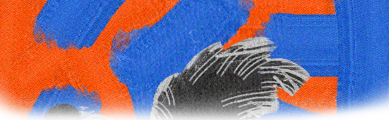
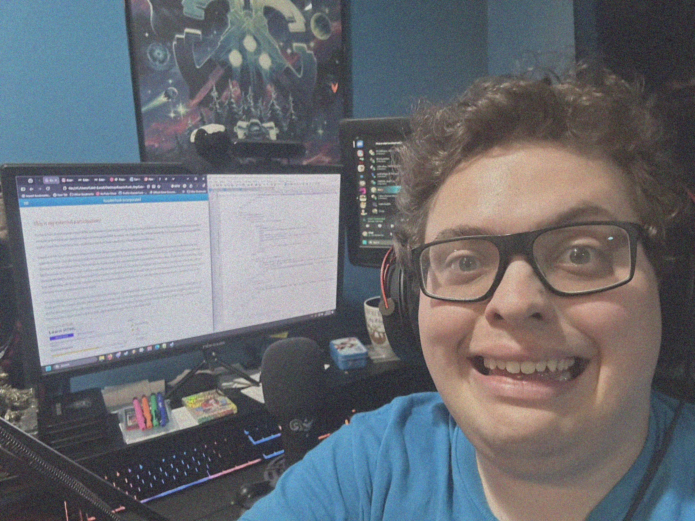

So, you want to get to know me more, eh? Well well well, you’ve certainly come to… a place…
If you meet me out in the field, I’ll likely tell you to call me “Ambrose.” This is my last name, but it’s the name I recognize best. I am personally not very fond of my first name being so common, so after experiencing 2 years of JROTC in high school, I started using my last name like my first. You can also call me Koaster if you really want to freak me out one day -- that’s my online alias.
I originally hated school before college. I thought I was bad at learning and that generated a lot of self-hatred towards myself. Funnily enough, it was Covid that brought me out of my depressive state. When classes suddenly got lenient and online based, I realized the only reason why I was not as great as I wanted to be was because I was burnt out from how the school wanted me to learn. It clicked with me that my school was trying to teach a fish how to climb a tree. I had to teach myself how I learn, and It turned out I loved to do it!
Now I’m about to graduate MTSU with a bachelor’s in audio production.
I may call myself an audio technician, but I am much more than that. I’m a curious creator, and my attention is always shifting from one idea to the next. Funny enough, this exact blessing was originally the reason why I hated myself! I have trouble sticking to one thing, for my mind always wants to do something new -- even if the new thing is harder. I love to push limits and see what’s possible, where secondary level education is based on rigid structure and “doing it the right way.” I cannot shackle myself to what works. I need to learn if what we have is good or if we are just complacent in mediocrity.
So what does that mean for me? What am I?
I’m The Fool, and I wouldn’t have it any other way…